Prophet And Rashedeen TimeLine
From Prophet Ibrahim To Khulfa-e-Rashedeen
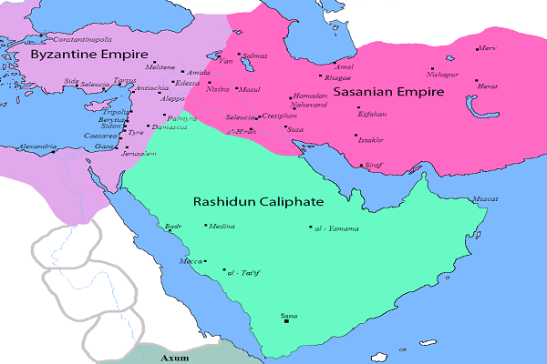
Photograph By Javierfv1212 and edited by HistoryofIran., Public domain, via Wikimedia Commons
↕
Swipe up or down to view more
2000 BC
Prophet Ibrahim was thrown in fire by King Namrud in the city of Ur Mesapotamia, when he defied his claim of being GOD.
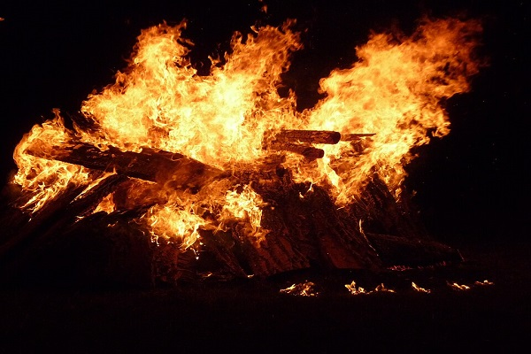
Photograph By 4028mdk09, CC BY-SA 3.0, via Wikimedia Commons
520 CE Kaaba Attacked
Ethopia King Abraha Attacked Kaaba, his forces & Elephents were crushed to Death from stones, dropped by birds Which all of sudden appeared on the sky.

Photograph By See page for author, Public domain, via Wikimedia Commons
570 CE Prophet Muhammad
Prophet Muhammad was born as an orphan in the city of Macca in the tribe Banu-Hashim, who were the custodians of Kaaba at that time
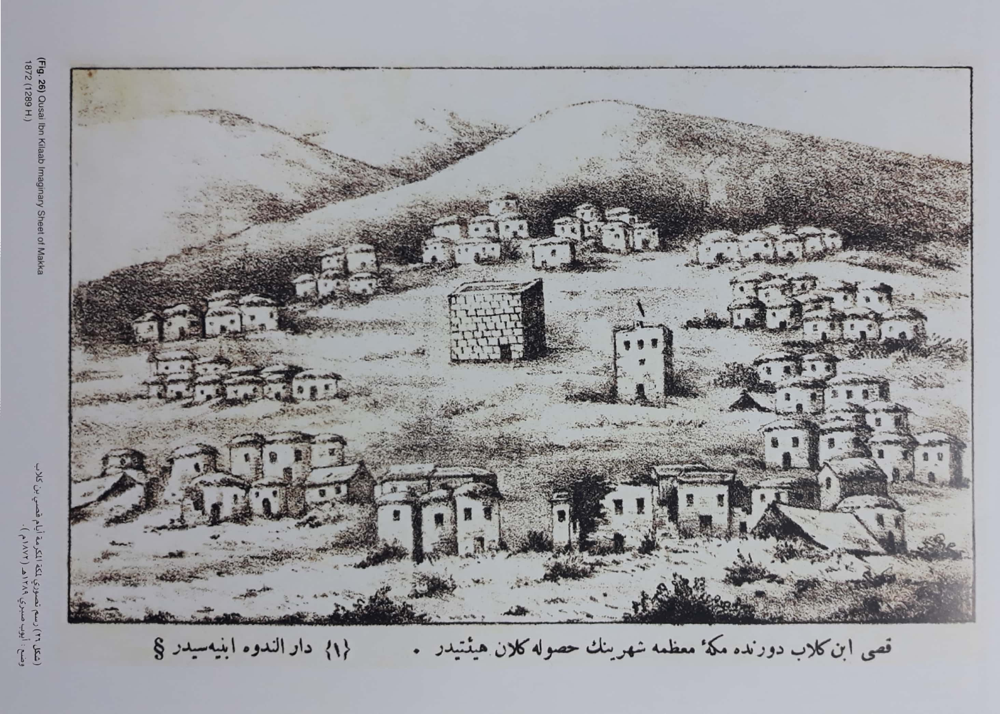
Photograph By Wikimedia via Public domain Wikimedia Commons
610 CE First Revelation
First revelation of Quran
From Angel Gabriel on Mount Hira Where Prophet used to come regularly to think about GOD
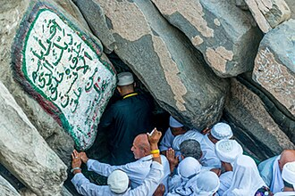
Photograph By saudipics, CC BY-SA 4.0, via Wikimedia Commons
613 CE Public Preaching Starts
Prophet Muhammad begins public
preaching in Mecca and was severely opposed by elites, except few poor who dared to accept Islam risking lives.
Photograph By user:Sonia Sevilla, CC0, via Wikimedia Commons
622 CE Migration To Madina
Prophet Muhammad is Invited
to Madina & avails this opportunity to establish the first Islamic state in the world. Islamic Calendar starts from here.
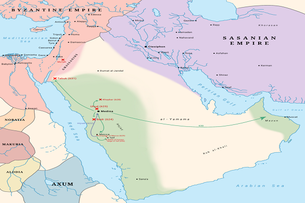
Photograph By Fazoffic, CC0, via Wikimedia Commons
624-627 CE Key Battles
Key battles including Badr, Uhad &
the Battle of the Trench are fought between Muslims and non-beleivers. victories in battles consolidated Islam.
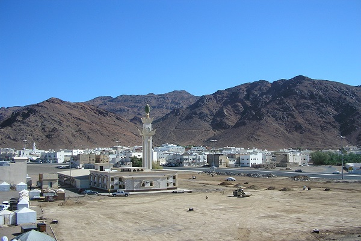
Photograph By Adiput Public domain, via Wikimedia Commons
630 CE Mecca Conquered
Mecca is conquered; Islam is fully
established in the Arabian Peninsula, idols were removed from Kaaba, Haj was performed first time in the Islamic way.
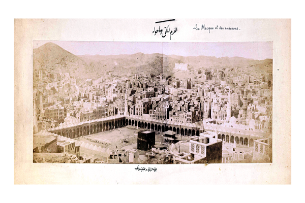
Photograph By Muhammad Sadiq Bey via Wikimedia Commons CC BY-SA 3.0
632 CE Prophet leaves world.
Prophet Muhammad passes away,
Abu Bakr becomes the first Caliph, initiating the Rashidun Caliphate which lasts for the next 30 years.
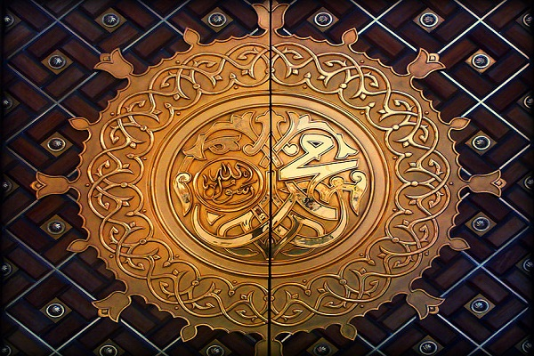
Photograph By بلال الدويك, CC BY-SA 3.0, via Wikimedia Commons
632-661 CE Khilafate-Rashdeen
Next 30 years see expansion of Islam
into the neighbouring powerful Byzantine & Sassanid territories and the first Muslim civil war.
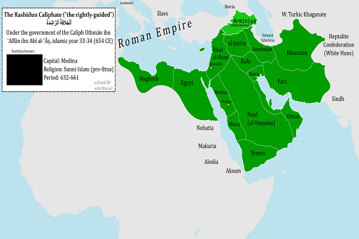
Photograph By Wario2 CC0, via Wikimedia Commons
632 CE Abu Bakr
Prophet's ally Abu Bakr takes over.
After being elected as the first Khalifa, immediately dispatched prophet's incompleted expedition to Syrian border.
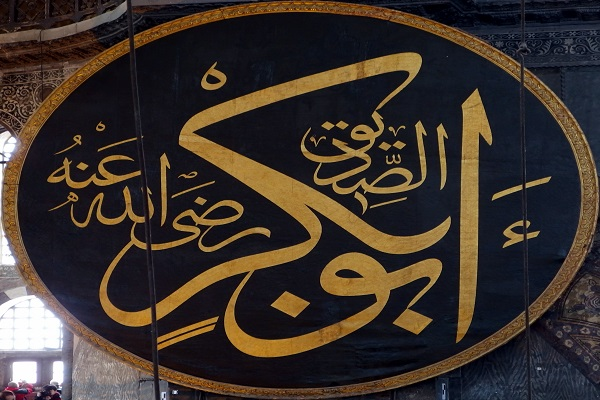
Photograph By Mark Ahsmann, CC BY-SA 3.0, via Wikimedia Commons
633 CE First Compilation of Quran
Following high casualties of memorizers, Zyad ibn Thabit was ordered to collect and compile Quran into a single and authentic volume.
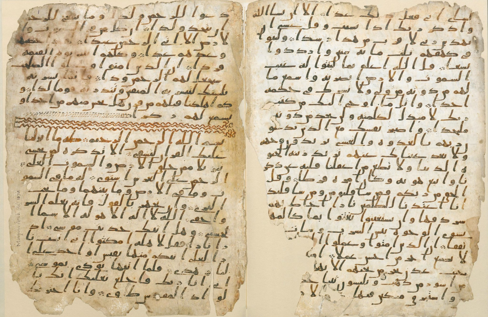
Photograph By AnonymousUnknown author, Public domain, via Wikimedia Commons
633-634 War with neighbouring powers.
Prophet's earlier coordinated military campaigns were launched into the borders of Persian & Byzantine Empires.
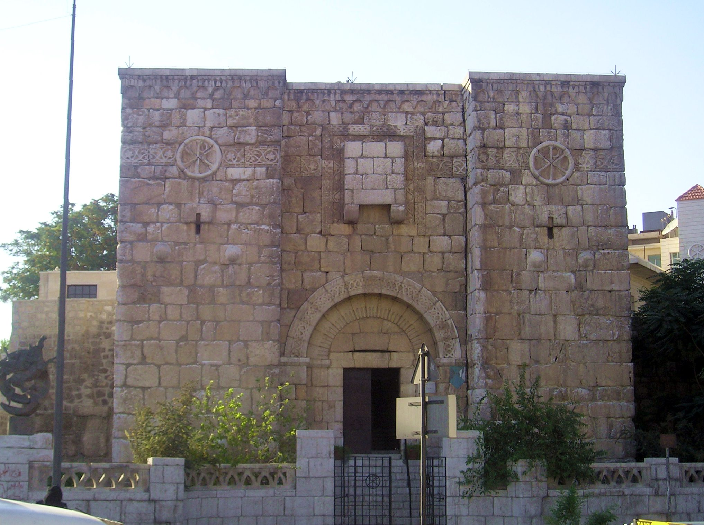
Photograph By Heretiq, CC BY-SA 3.0, via Wikimedia Commons
634 CE Abu Bakr Leaves World
First Khalifa Passes away after
nominating Umar ibn al-Khattab to succeed him as the next leader of the newly formed Islamic state.
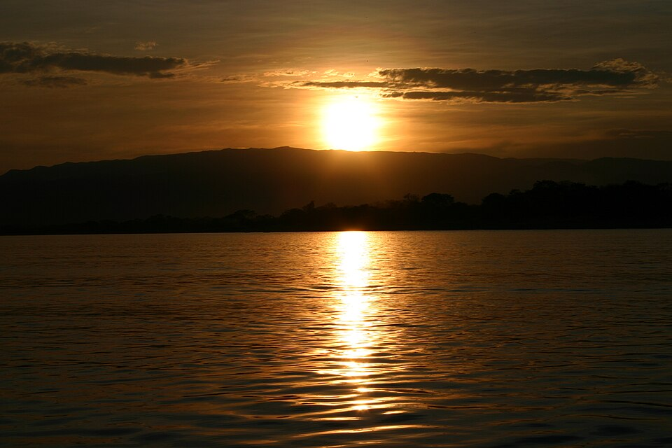
Photograph By i_pinz from Vienna, AT, CC BY-SA 2.0, via Wikimedia Commons
634 CE The Second Khalifa
Umar bin Khattab takes on. His caliphate period lasts for 10 years with unprecedent victories over great empires of Byzantine and Sassanid
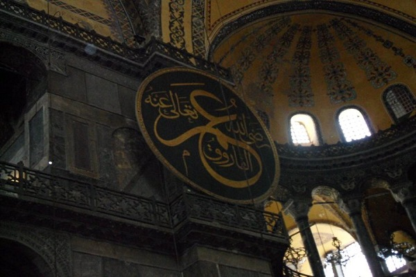
Photograph By Bassem, CC BY-SA 3.0, via Wikimedia Commons
634 CE Battle of Ajnadayn
A decisive clash resulted in Rashedeen
victory over Byzantine forces in Palestine opening the door of Conquests in Levant.
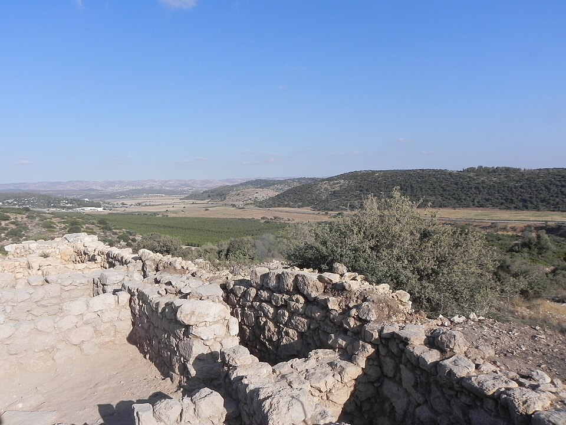
Photograph By Yoav Dothan, GFDL, via Wikimedia Commons
642 CE Battle of Nahavand
Victory of Victories, won by Muslim army
under Al-Numan ibn Muqarrin. This war gave Sasanians a catastrophic defeat.
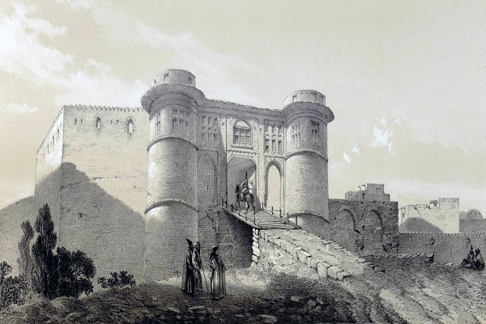
Photograph By Eugène Flandin, Public domain, via Wikimedia Commons
644 CE Second Khalifa Assassinated.
Mortally wounded while leading prayer.
Before passing away appointed a six-man committee to choose the next Caliph.
_by_mohammad_adil_rais.jfif)
Photograph By Mohammad adil at English Wikipedia, CC BY-SA 3.0, via Wikimedia Commons
644 CE Uthman ibn Affan elected Third Caliph
His caliphate lasted 12 years
First phase, major expansion & prosperity and then phase of rising internal dissent
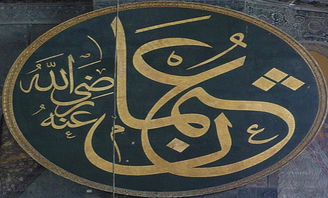
Photograph By Vikiçizer, CC BY-SA 4.0, via Wikimedia Commons
647-649 CE Formation of First Muslim Navy
Authorizes Muawiyah(governor of Syria)
to build the first Islamic naval fleet leading to the conquest of Cyprus.
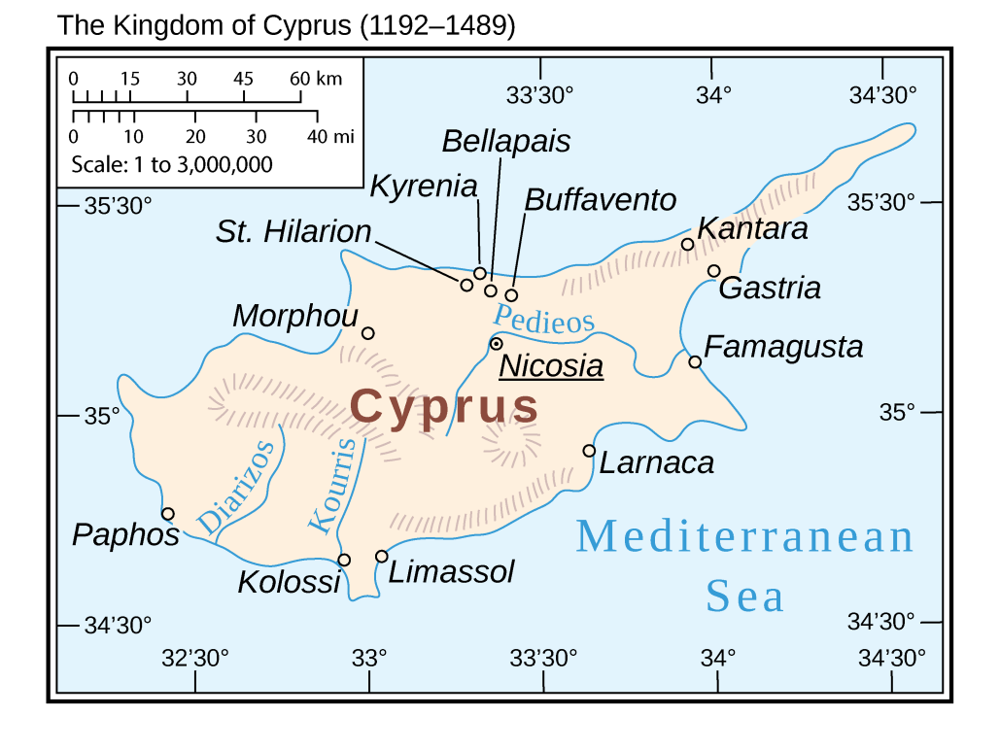
Photograph By Cattette, CC BY 4.0, via Wikimedia Commons
651-654 CE Expansion continue east & west
Military expeditions are pushed deeper into
North Africa, coastal parts of Europe and across Central Asia.
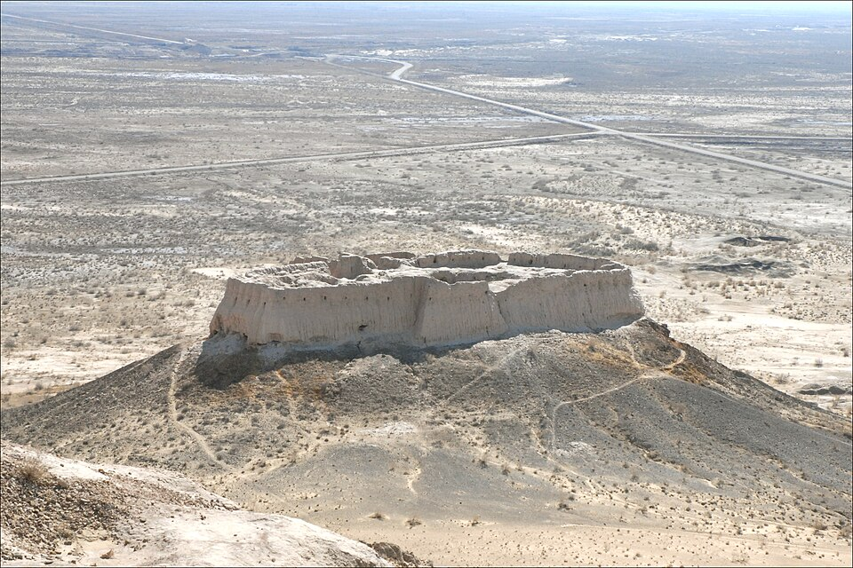
Photograph By Jean-Pierre Dalbéra from Paris, France, CC BY 2.0, via Wikimedia Commons
656 CE Assassination of Third Caliph
Political factions, regional discontents
result in besiege of Uthman's house & his assassination while reading the Quran.
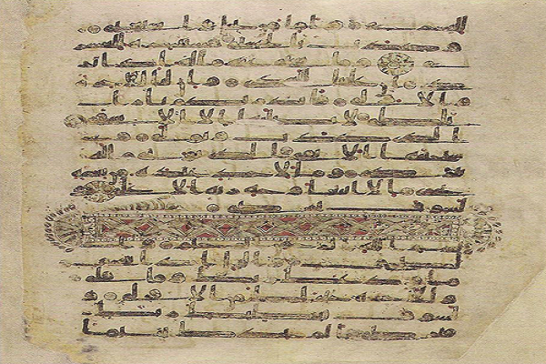
Photograph By Topkapı Palace Museum Library, Public domain, via Wikimedia Commons
656 CE Ascension of The Fourth Khalifa
Ali ibn Abi Talib elected as fourth Caliph
amidst heavy political turmoil in Yathrub. He Shifted capital from Yathrub to Kufa,Iraq.
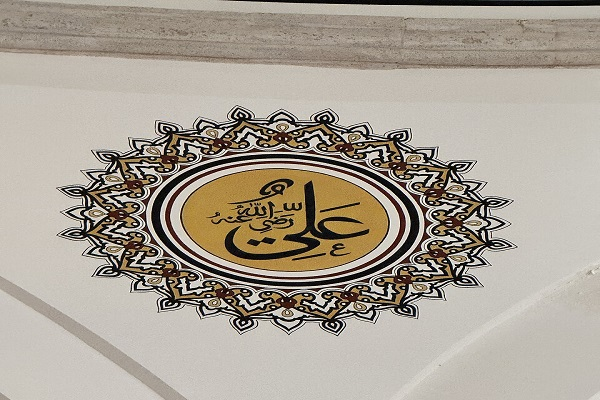
Photograph By Bjelica, CC BY-SA 4.0, via Wikimedia Commons
658 Battle of Nahrawan
A radical faction(Kharijites) breaks away
from Khalifa after rejecting arbitration announced during the battle of siffin.
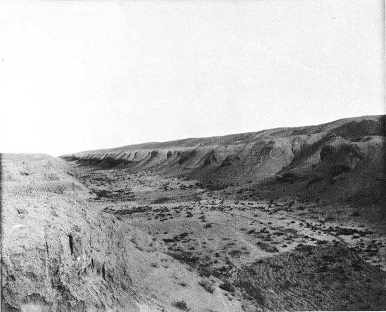
Photograph By Gertrude Bell (verstorben 1926), Public domain, via Wikimedia Commons
661 CE End of Rashedeen Chaliphate
Ali Ibn Talib Assassiniated in Kufa
by a Kharijite al-Rahman ibn Muljam. Hassan ibn Ali, succeeds but abdicates to avoid further bloodshed.
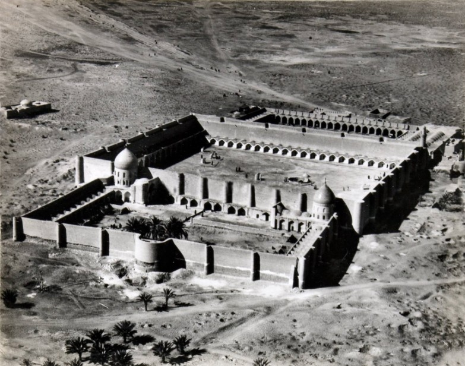
Photograph By See page for author, Public domain, via Wikimedia Commons
.jpg)
.jpg){kind=link}


.jpg){kind=link}


_by_mohammad_adil_rais.JPG){kind=link}
.JPG){kind=link}

_(5608879653).jpg){kind=link}